| どこで | アドレス | ひとこと |
|---|---|---|
| 受付PC | https://giiv6wcx.lamarck-lan.com:13800/ | 受付は必ずこちら。会計の呼び出し（Windows通知）が使えるのはこのアドレスだけです |
| 院内の他のPC・iPad | https://giiv6wcx.lamarck-lan.com:13800/ | 診察室・処置室はこちらで大丈夫です |
| 院外（自宅など） | https://serverpc.tail2de5bb.ts.net:8452/ | Tailscaleに入っている端末のみ。iPhoneで開けないときは http://100.111.66.29:3800/ |
パスコードは予約システムと同じもので、スタッフ全員が入れます。受付PCなど決まった端末では、院長のパスコードでログイン画面の「この端末で覚える」にチェックしてログインすると、次からはパスコードを入れずに開けます。診察室など、みんなで使う端末ではチェックしないでください。
いちばん上の検索欄にカルテNo.・飼い主さまの姓・ペットの名前のどれを入れても探せます。カルテNo.は ○○○○-2 のように、ハイフンの後ろが「その飼い主さまの何頭目か」です。枝番なしの番号や名前で探すと候補の一覧が出るので、開く子を押してください。ひらがな・カタカナのどちらでも探せ、「やまだ ぽち」のように姓とペットの名前を空白で区切ると絞り込めます。
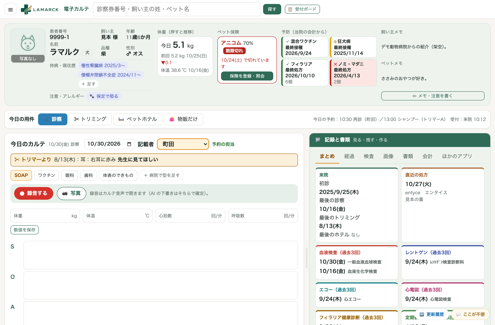
| 場所 | 何が出るか |
|---|---|
| いちばん上 | ≡ メニュー・検索欄・📋 受付ボード（会計待ちがあると赤い数字） |
| 上の帯 | 名前・犬猫・品種・性別・年齢・持病・既往歴・注意・アレルギー／体重（押すと推移）と最新の体温／ペット保険／予防（ワクチン・狂犬病・フィラリア・ノミマダニ）／メモ |
| 今日の用件 | 診察・トリミング・ペットホテル・物販だけ。今日の予約から自動で選ばれます。右に今日の予約と受付の時刻 |
| 今日のカルテ（左） | 記載者・数値（体重・体温・心拍数・呼吸数）・S/O/A/P。トリミングの日はトリミングノート、ホテルの日はホテルの欄に替わります |
| 記録と書類（右） | まとめ（最初に出ます）・経過・検査・画像・書類・会計・ほかのアプリ |
| 下の段 | 検査 → 処置 → 処方 → 会計。選んだ物がそのまま会計に入ります |
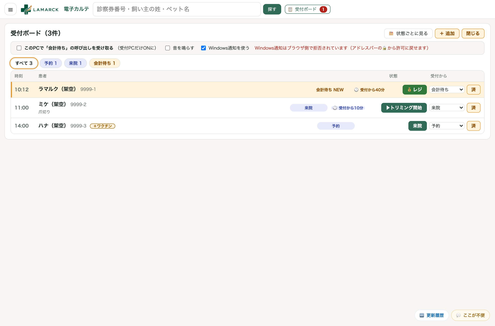
画面の上の［📋 受付ボード］（またはメニュー）から開きます。患者の画面の代わりに出て、［閉じる］か患者を探すと患者の画面に戻ります。今日の予約は朝、自動で並びます（再来機で受付すると自動で「来院」に進みます）。
| 列 | 内容 |
|---|---|
| 時刻 | 受付した時刻（まだ来ていない予約は予約時刻） |
| 患者 | 名前・カルテNo.・メモ |
| 状態 | 色つきの札。青＝待合／緑＝進行中／橙＝会計／灰＝終わり・赤＝未収 |
| 受付から | 来院・診察中・会計待ちは30分超で黄、1時間超で赤。トリミング中・ホテルなどは色を付けずに「院内○時間」 |
| 操作 | 次に進める青いボタン（▶診察開始・▶トリミング開始・✓会計待ちへ）・💰レジ（その子の会計の欄へ）・状態の変更・済 |
受付ボードの上の帯で、受付PCで1回チェックを入れるだけでずっと有効です。他のPCには出ません。
電話が鳴ると、受付PCの画面の左下に小さな札が出ます。札は30秒で消え、音は鳴りません。登録のある飼い主さまなら「☎ 着信 カルテNo. ○○○○ 様（ペットの名前）」と出て、押すとその患者が開きます。登録の無い番号は「☎ 着信 電話番号 登録のない番号です」。アーミクスの着信表示はこれまでどおり出ます。
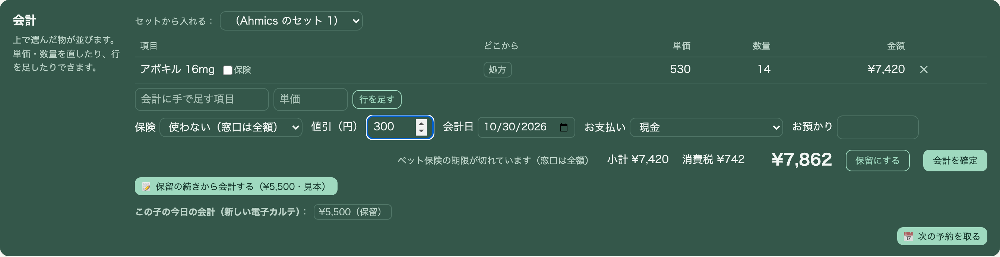
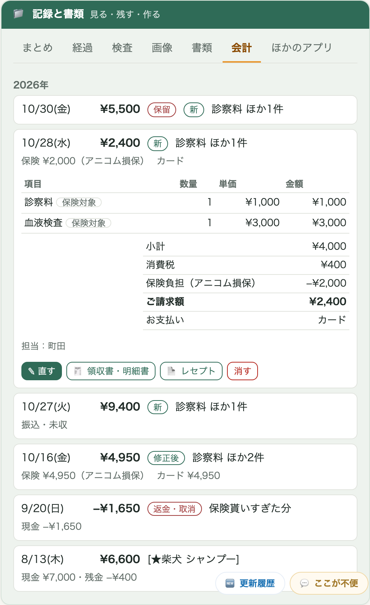
右の記録と書類 ＞ 会計に、Ahmics とこの電子カルテの会計が年ごとに新しい順で並びます。行を押すと明細が開きます。取り消し・修正前の会計は出していません（下の［表示する］で灰色で出ます）。
この電子カルテで入れた会計には、次のボタンが出ます。
| ボタン | できること |
|---|---|
| ✎ 直す／📝 続きから会計する | 会計の欄に戻して直し、確定で同じ会計を書き換えます（精算の後に直すと「直した履歴」に残ります） |
| 🧾 領収書・明細書／💊 薬袋／お薬説明書 | 出し直し（日付は会計日） |
| 📄 レセプト | 保険を使った会計の保険診療明細書。承認番号は会計に結んだ番号が入ります |
| 直した履歴 | いつ・誰が・いくらからいくらに直したか |
| 消す | 確かめてから消します。処方の薬の在庫の引き落としも戻ります |
| 入金を確かめて精算する | 振込（未精算）の会計に出ます。入金日を選んで精算 |
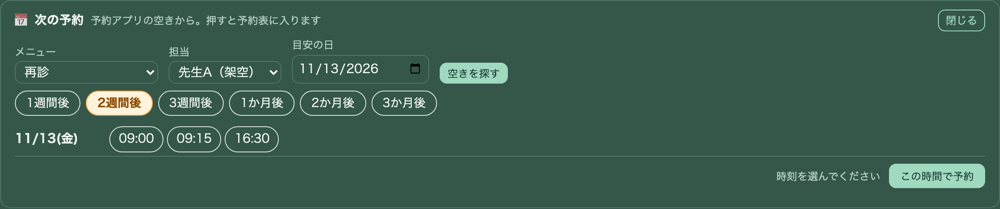
会計の欄の［📅 次の予約を取る］、予防の履歴の［📅 予約を取る］（ワクチン・狂犬病）、トリミングノートの［📅 この目安で予約］から開きます。メニュー・担当（前回の先生・トリマーが最初に入ります）・目安の日を選ぶと、前後の空きが最大3日分出ます。目安の日は1週間後・2週間後・3週間後・1か月後・2か月後・3か月後のボタンかカレンダーで選べます。時刻を押して［この時間で予約］で予約表に入ります。
メニューの🧪 検査取込トレイから。外注検査の結果はメールで届いたものが自動で取り込まれ、カルテNo.が分かるものはその子のカルテに自動で入ります。自動で判定できなかったものだけがここに残ります。［📄 開く］で中身を見て、カルテNo.を入れて［割当］。同じ結果を2頭に付けたいときは［コピー］、要らないものは［破棄］。［🧪 テスト送信］は検査会社の接続テストなので、ふだんは見なくて大丈夫です。
今日のカルテの記載者には、今日の予約の先生が最初から入っています（予約が無い日は、その端末で前に選んだ人）。選択肢は獣医師・動物看護師・受付です。予約の担当と違う人を選ぶと、欄の横に「⚠ 予約の担当は ○○ 先生です」と出ます（選び直しは止めません）。記載者は担当者ごとの売上にも使われます。
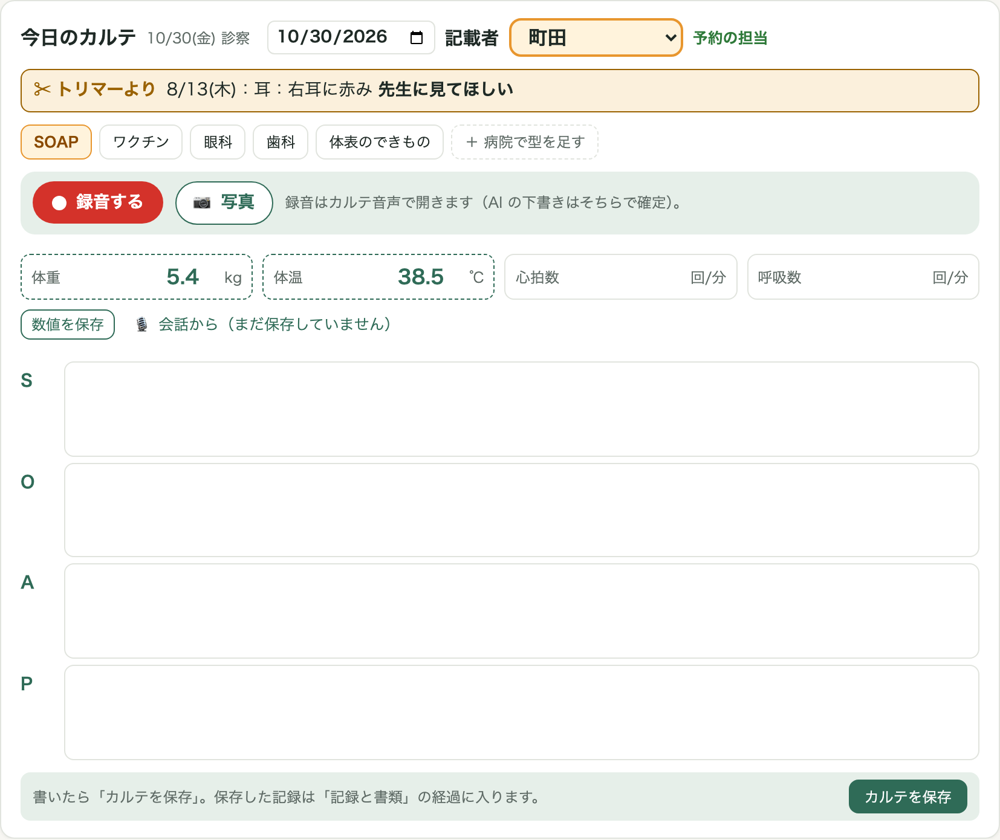
4つの欄に入れて［数値を保存］。体重は帯の体重に入ります。カルテ音声で録音すると、録音を止めた数秒後に、話した体重・体温が破線の枠で入ります（「🎙 会話から（まだ保存していません）」）。合っていれば［数値を保存］を押してください。押すまでは記録されません。前回の体重と10%以上違うときは ⚠ が出ます。
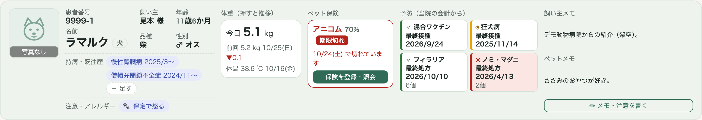
| 場所 | 見かた |
|---|---|
| 予防 | 最後に接種・処方した日。✓＝予防中・◷＝もうすぐ・✕＝切れています。フィラリアとノミマダニは個数も。兼用薬（スペクトラ等）は両方に入ります。押すと履歴が出ます |
| ペット保険 | 保険から出る割合・期間。［保険を登録・照会］で登録 |
| 注意・アレルギー | アレルギー・副作用・禁忌・🐾取扱注意（咬む・保定で怒る）。触る前に必ず見てください |
| メモ | 飼い主メモ・ペットメモ・飼主対応メモ（院内だけ） |
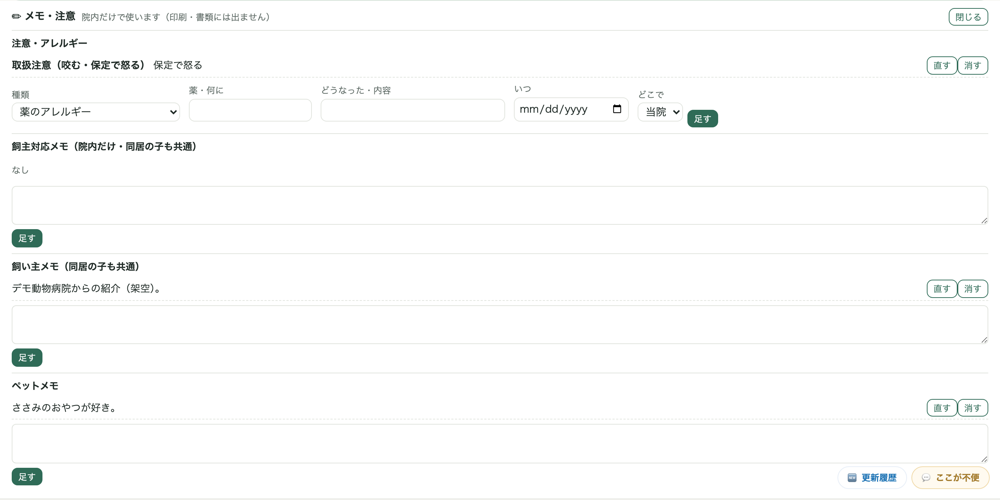
帯の［✏ メモ・注意を書く］で、注意・アレルギー・飼主対応メモ・飼い主メモ・ペットメモを足す・直す・消すができます。院内だけで使い、紹介状・領収書・証明書には出ません。
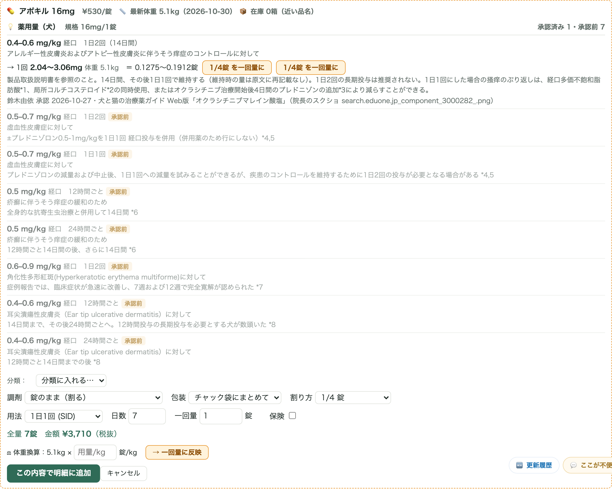
下の段の処方で「💊 薬を探して処方する」に薬の名前を入れて選ぶと、処方の窓が開きます。用法（SID〜頓服）・日数・一回量・割り方（1/2〜1/10錠）・保険を入れると、全量と金額が出ます。体重から一回量（mg/kg）、薬剤マスタの承認済みの量、調剤（粉にして分包・液に）・包装・液体の本数、その薬の在庫も見られます。［この内容で明細に追加］で会計に薬の行が入り、確定の後に薬袋・お薬説明書を印刷できます。
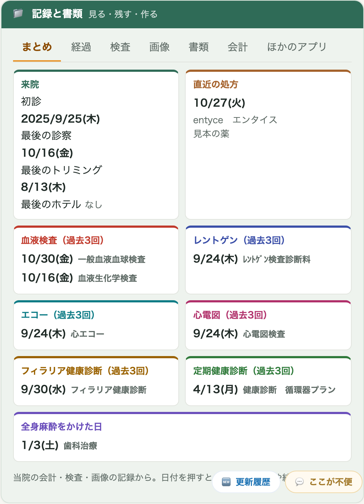
| タブ | 内容 |
|---|---|
| まとめ | 初診・最後の来院（診察・トリミング・ホテル）・直近の処方・血液/レントゲン/エコー/心電図/フィラリア健診/定期健診の過去3回・全身麻酔の日。日付を押すとその日のカルテや結果へ |
| 経過 | 来院ごとの記録。診療・トリミング・ホテル・新しいカルテ・他院からのご紹介で絞れ、「この子の記録を探す」でことば検索（「膝 手術」のように並べて） |
| 検査 | 表と推移グラフ。［🖨 この表を印刷］ |
| 画像 | レントゲン・エコーなど。押すと大きく出ます |
| 書類 | 紹介状・報告書・写真・証明書。間違えて入れた書類は［消す］ |
| 会計 | 過去の会計（3-5） |
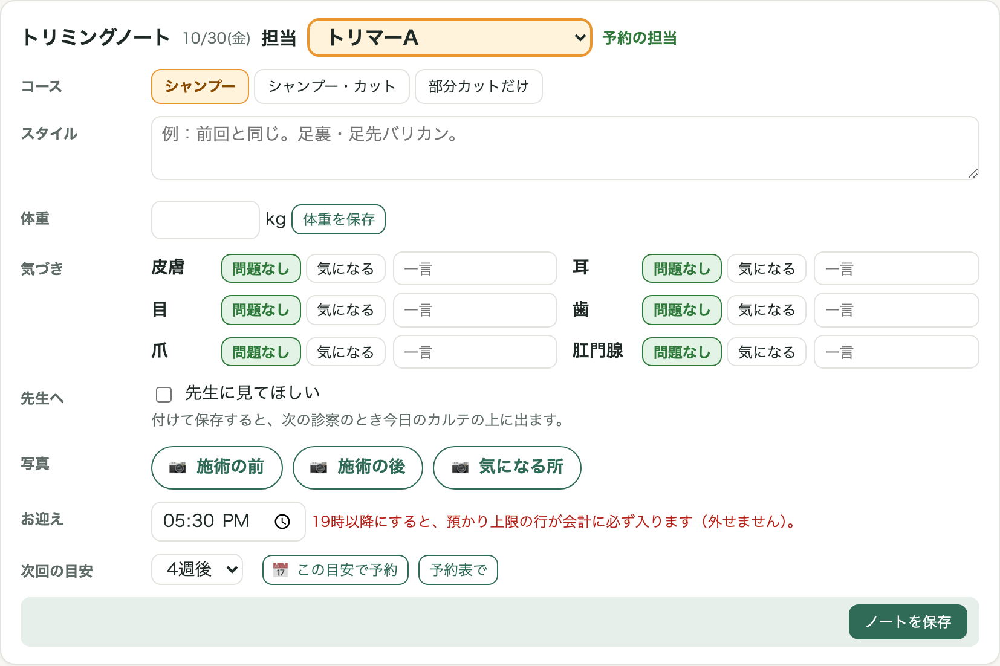
| 出す物 | どこから | ひとこと |
|---|---|---|
| 紹介状・経過報告書・セカンドオピニオン依頼 | 書類 ＞ ［＋ 紹介状を作る］ | まとめる日を選び、AIの下書き（任意）→獣医師が直して印刷。宛先はメニューの⚙ 設定で登録 |
| ワクチン接種証明書・狂犬病予防注射済証 | 書類 ＞ ［💉］［🐕］ | 最後の接種日・ワクチン名・次回の時期が最初から入ります。ロット・獣医師・写真（その場で切り抜き）を足して印刷 |
| カルテ印刷 | 経過 ＞ ［🖨 カルテを印刷］ | 各日に印を付けて、選んだ日だけを1枚の診療記録に |
| 検査の表・処方歴 | 検査 ＞ ［🖨 この表を印刷］／処方 ＞ ［🖨 処方歴を印刷］ | 今見ている表のまま |
| 領収書・明細書・薬袋・お薬説明書・レセプト | 会計の欄・会計のタブ | 3-4・3-5 |
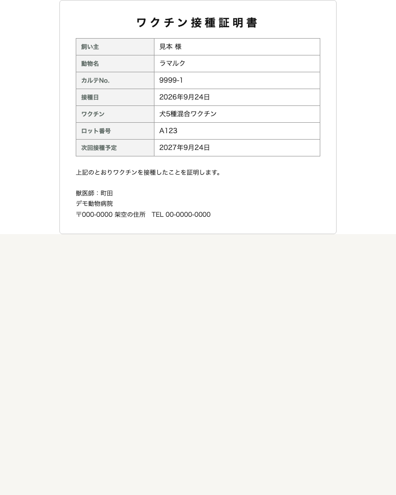
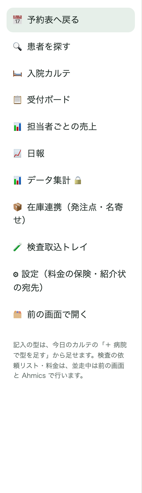
| メニュー | 内容 |
|---|---|
| 📈 日報 | 日付を選んで、請求計・現金・カード・保険・分類別の売上 |
| 📊 データ集計 🔒 | 経営パスコードを画面の欄に入れて開きます。月次サマリー・期間・年度・推移・患者数とリピート・予防・地域・CSV・印刷・🔒ロック |
| 📊 担当者ごとの売上 | 期間を選び、人ごとに診察・トリミングの売上（この電子カルテの会計・税抜）。行ごとに、トリミングの項目は担当トリマー、それ以外は記載者に付きます。物販・ホテルは誰にも付けません |
| 📦 在庫連携 | 発注点割れ・自動で減らした記録・🔗 名寄せ（処方の薬と在庫の品目を結ぶ。入数の上書きはその行の欄で） |
| ⚙ 設定 | 料金の項目ごとの保険の対象（「保険の会計 ○回のうち○%が対象」を見ながら付け外し・料金表に戻す）と紹介状の宛先（足す・直す・消す） |
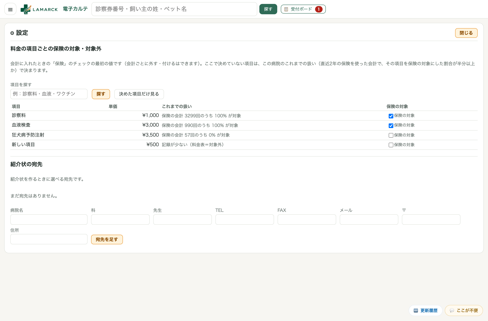
画面の右下の［💬 ここが不便］から、使っていて困ったことをそのまま書いて送れます。院長に届き、そのまま改善に入ります。［🆕 更新履歴］で最近変わったことが見られます。
メニューの［❓ ヘルプ］（または F1・? キー）で、このガイドの中身をことばで探せます。調べたい操作の名前を入れると、その説明の節が上に出ます。
| 症状 | どうするか |
|---|---|
| 「患者が見つかりません」 | カルテNo.の桁を確認。枝番（-2 など）を外すか、飼い主さまの姓・ペットの名前で探してください |
| 記載者が空のまま／「選んでください」 | 今日の予約が無い日です。記載者の欄で選んでください |
| 「⚠ 予約の担当は ○○ 先生です」と出る | 予約の担当と違う人を選んでいます。合っていればそのままで大丈夫です |
| 保険を使ったのに保険の負担が少ない | 会計の各行の「保険」のチェックを確かめてください。毎回同じなら⚙ 設定でその項目の保険の対象を決めてください |
| 体重・体温の候補が入らない | 録音を止めて文字起こしが終わるまで数秒〜かかります。多頭の診察は、要点ができてから入ります（体温は入りません） |
| 次の予約で空きが出ない | 予約システムが開けている期間の外か、ネット予約に出していないメニュー・担当です。予約表で取ってください |
| 会計の呼び出しが出ない | ①受付ボード上部のチェック ②https://giiv6wcx.lamarck-lan.com:13800/ で開いているか ③ブラウザで通知を「許可」したか |
| 受付PCで毎回パスコードを聞かれる | ログイン画面の「この端末で覚える」にチェックしてログインし直してください（決まった端末だけ） |
| Ahmics に入れた検査値・カルテが出てこない | コピーは2時間ごと（9・11・13・15・17・19時）です。次のコピーのあとに患者を開き直してください |
| 間違えて保存した | カルテ・体重・メモ・書類・会計は直す・消すができます。分からなければ消さずに院長へ |
| 画面が真っ白／表示が古い | いちど再読み込み（⌘R / Ctrl+R）。それでも直らなければ「ここが不便」か院長へ |
| 前の画面を使いたい | ≡ メニューの「🗂 前の画面で開く」（ポイントカードなど、まだ前の画面にしか無い物があります） |